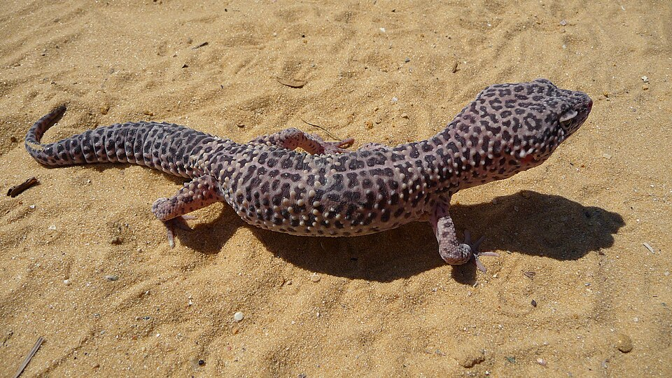

Leopard Gecko
A ground-dwelling, mostly nocturnal gecko recognized by its spotted pattern and movable eyelids. Adults are usually calm, but need gentle, supported handling.
- Adult size
- 7–10 in (18–25 cm)
- Lifespan
- 10–20 years
- Wild habitat
- Rocky, dry parts of South Asia
Care essentials
Provide a secure, ground-focused enclosure with a warm-to-cool gradient, a humid hide and fresh water. Offer a range of appropriately sized, gut-loaded insects; supplement as advised by a reptile veterinarian. Low-level UVB is beneficial.